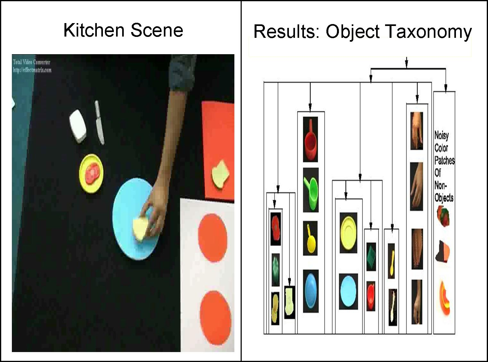

Muralikrishna SridharPhD in Machine Learning (Apr 2007 to Now)E-mail: krishna@comp.leeds.ac.uk |
Current Research : Learning Object and Event Taxonomies from Video
Introduction
In this project we have devoloped a method for learning about human activities from video. The idea is to look for repeating patterns of changing spatial relationships between tracked entities in the scene. Having discovered these patterns or events in this way, we look at the roles objects play in these events and thereby produce a taxonomy of objects.
Data Sets and Results
We demonstrate our framework on a kitchen set up, where the scene consists of hands simulating the preparation of various dishes, lasting around 10 minutes. We obtain a event taxonomy and a object taxonomy as shown.Data Set Sample Download Video
- Muralikrishna Sridhar, Anthony Cohn, Hogg David C, Learning Functional Object-Categories from a Relational Spatio-Temporal Representation ,ECAI 08. Download
Method
- We introduce a framework that models spatio-temporal Interactions between objects in terms of a graph, that we call an activity graph.
- Event learning involves mining frequent subgraphs from the activity graph. The events are related in a "part of" relationship resulting in a event taxonomy.
- Object learning involves representing objects in terms of the role they play in the learned events and then learning object categories from this representation.
- Experiments in the domain of food preparation and surveillance result in a object and event taxonomy. These results. suggests that our representation and learning techniques are a promising framework for learning functional object-categories from video.
Previous Research
MSc(Research) Machine Learning, University Of London(2004-5)My MSc by Research was in Machine Learning under the supervision of Dr.Chris Watkins at Royal Holloway, University Of London. My Research Project aimed at learning frequent patterns of words from a text corpus. Words are then represented in a feature space in terms of of their occurances in these patterns. Unsupervised learning on this features space results in clusters of words that represent syntactic and semantic concepts. Supervised learning is then used to generalise these relationships that are evaluated using TOEFL tests.
Hewlett-Packard Labs, India(2005-7)I was the owner of the Shape Recognition Project as a part of the Pen and Handwriting Recognition Team at HP Labs. This project aims at advancing pen-based interfaces by developing robust, generic and adaptive algorithms for the recognition of handwritten characters and gestures. My contribution was in implementing a combination of generative and discriminative kernel based classifiers. We obtained accuracies on standard datasets, that excede the state of the art. I also implemented a prototype system that implements gestures recognition for carrying out common tasks on a laptop.
Publications
- Muralikrishna Sridhar, Dinesh M and Mehul P, Active-DTW : A Generative Classifier that combines Elastic Matching with Active Shape Modeling for Online Handwriting Recognition, IWFHR 10, Oct 2006. Download
- Dinesh Mandalapu and Muralikrishna Sridhar, A Feature based on Encoding the Relative Position of a Point in the Character for Online Handwritten Character Recognition, ICDAR 07. Download
- Muralikrishna S, Deepu V, Dinesh M and Sriganesh M, A Generic Approach for Handwritten Shape Recognition. HP Labs Technical Report, Sept 2005
- Sriganesh Madhvanath, Deepu.V, Thanigai.M, Muralikrishna Sridhar LipiTk: A Generic Toolkit for Online Handwriting Recognition. HP TechCon, India, November 2005
- Muralikrishna Sridhar, Chris Watkins Word Similarity Modelling with Slot Phrases. MSc thesis, University Of London. Download
Software Experience
AU-KBC Research Centre, India(2003-4)As Project Associate, Natural Language Processing Team I was Responsible for the design and implementation of a Text to Speech System for Tamil Language
HCL Perot Systems, India, India(2001-2)As a software engineer working on the Lufthansa Cargo Project, I Implemented a Queing algorithm for scheduling flight cargo.